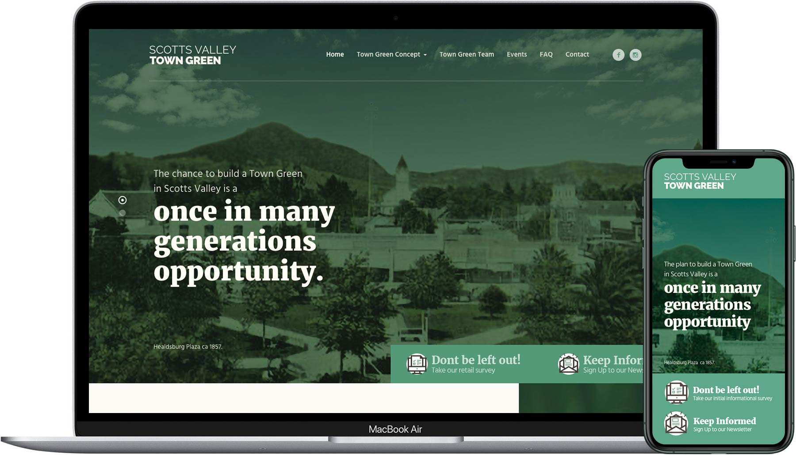
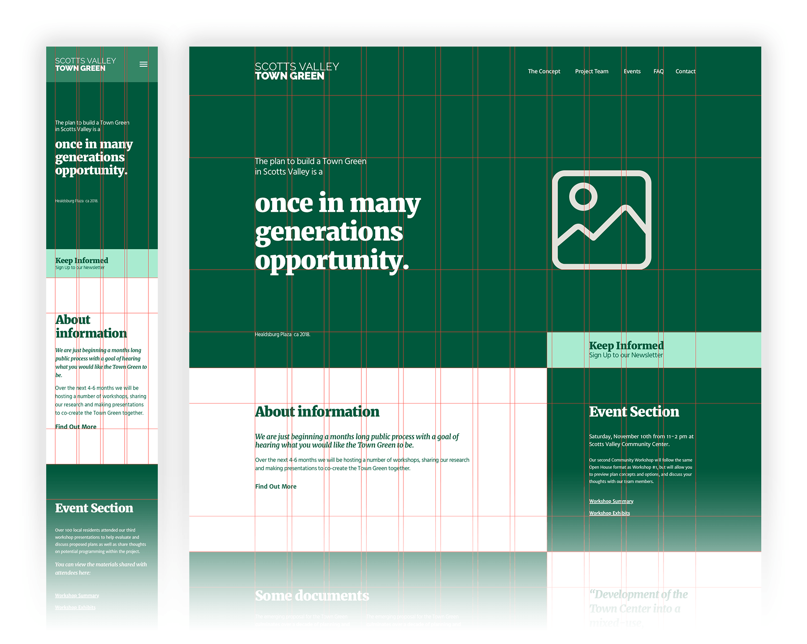
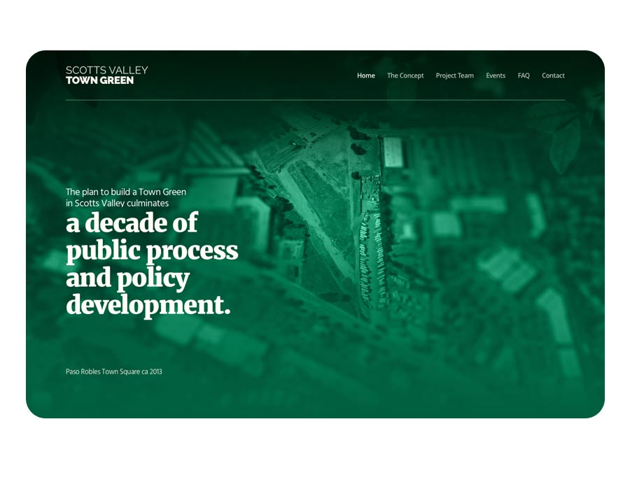
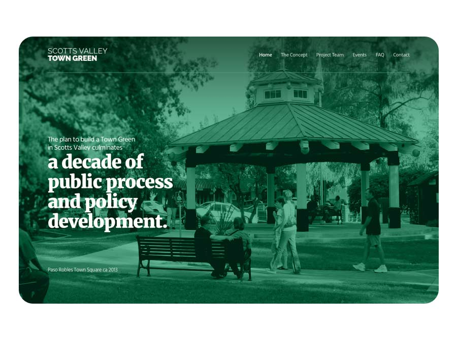
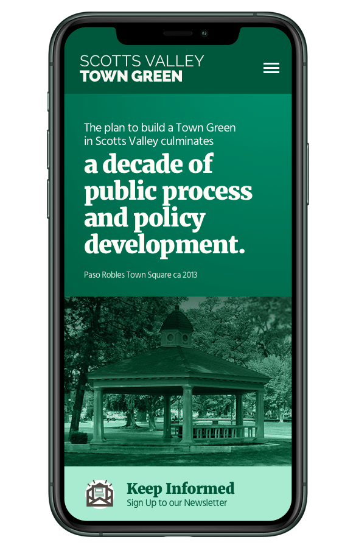
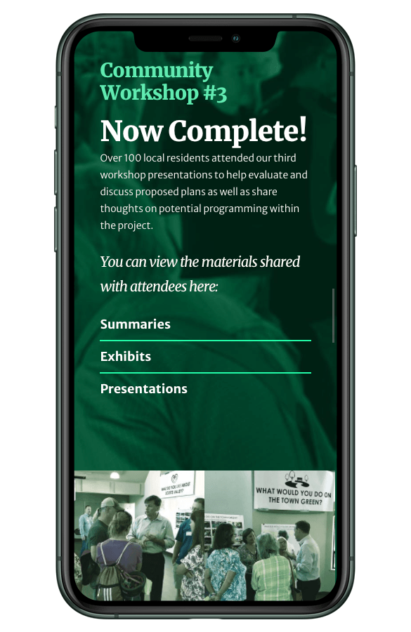
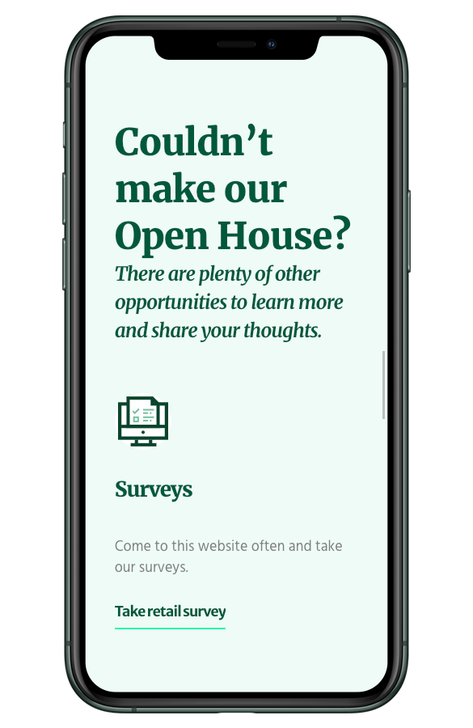
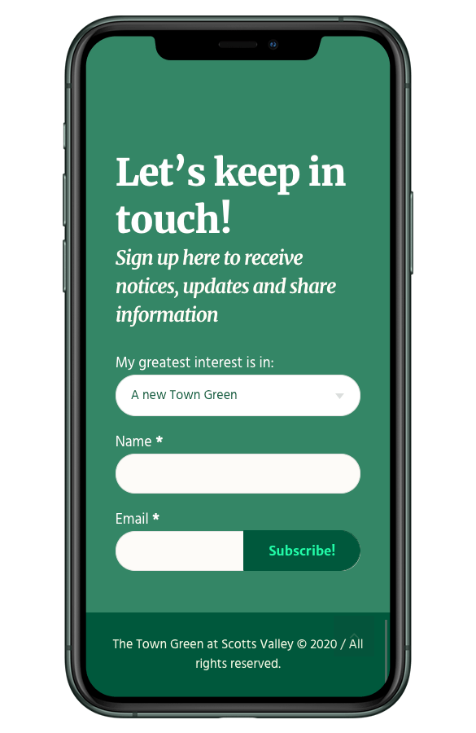
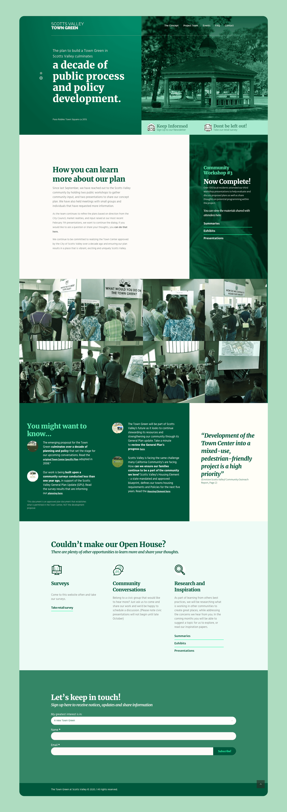

I'm a UI designer with over 10 years of experience, my portfolio includes user interface design, brand & identity design.
Guadalajara, JaliscoMexico
davehausus@gmail.com +52 1 331 600 6116

The Town Green project represents a US $180 million mixed-use development in Scotts Valley, California — including housing, retail, restaurants, public art, and green spaces. As the development team prepared for the community’s first event, they needed a digital platform to inform residents, collect interest, and build an early subscriber base. I was tasked with building that platform from scratch.
Launch a clean, responsive, mobile-first website in two weeks, in time for the first community event — and collect contact information from visitors to allow the development team to communicate updates as the project evolves.
I served as the sole designer and developer. Responsibilities included:




To evoke the feel of a welcoming community space, I chose to use evocative photos of plazas, green spaces, and community areas in California — rather than empty land. This helped communicate the vision of Town Green as a gathering place, rather than just a real estate development.

Starting with a mobile layout allowed for quicker prototyping and ensured accessibility for many users. Once the mobile foundation was solid, the design was easily expanded to a desktop version, making the site future-proof and responsive on all devices.


The site was structured with user and community needs in mind:
These numbers demonstrate early community interest, engagement, and success at building a subscriber base — exactly what the site aimed to achieve.
